Галерея работ
Все
Видео
Интерфейсы
Графика
Ручное творчество
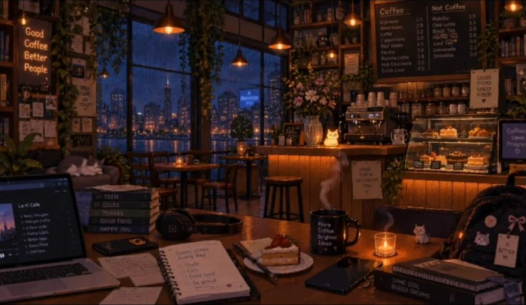
Destiny Matrix Lab YouTube · 7 видео и 3 Shorts ↗
Мой YouTube-канал с атмосферными видео и англоязычными объясняющими роликами. При создании видео использую Claude.
Атмосферные видео
Ночное кафе, японский lo-fi и осенний dark ambient.
Объясняющие ролики
Длинные видео, в которых обложки, титры и схемы помогают следить за объяснением.
Графика для роликов
Обложка с крупной цифрой 13 Кадр со схемой из ролика
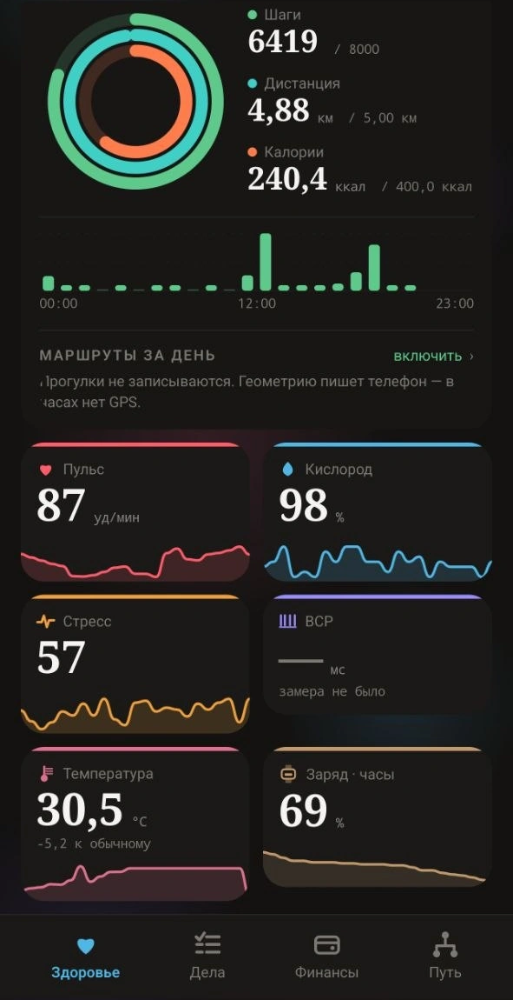
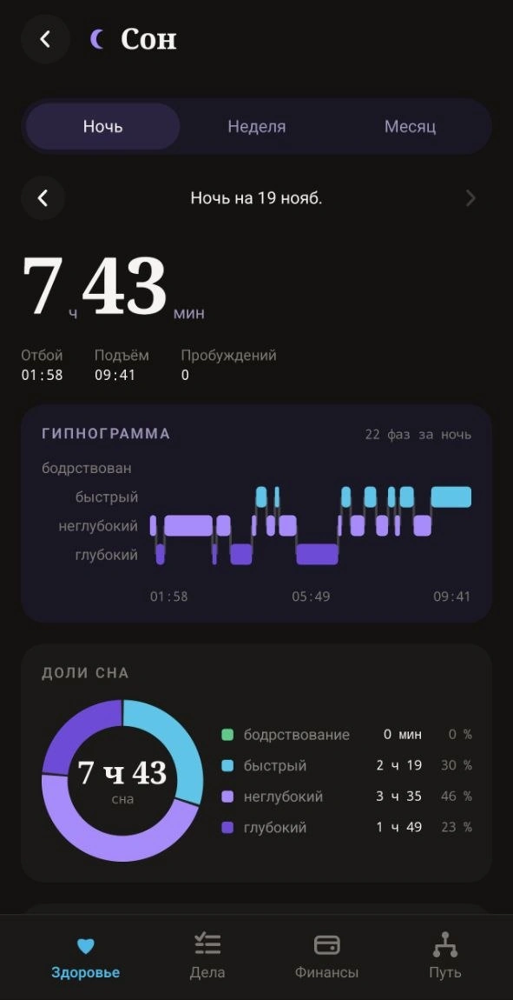
WatchB8 Смарт-часы · Активность, сон и здоровье ↗
WatchB8 связывает часы и кольцо B8 с приложением. В нём можно следить за активностью, сном и пульсом, планировать дела и вести учёт расходов.
На главной, в дневнике сахара и в разделе «Финансы» показаны демонстрационные данные.
←
1 из 8
→
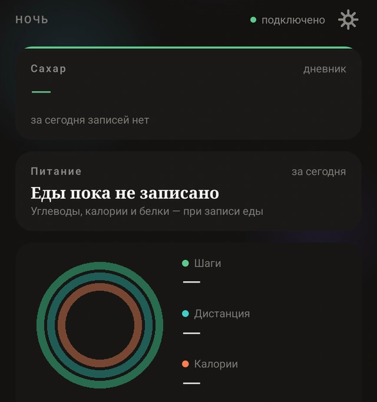
Главная Подключённое устройство, активность и здоровье за день.
Активность Кольца показывают шаги, дистанцию и калории. Ниже видны карточки пульса, кислорода, стресса и заряда часов.
Сон Гипнограмма показывает, когда менялись фазы сна. Кольцевая диаграмма показывает, сколько времени заняла каждая фаза.
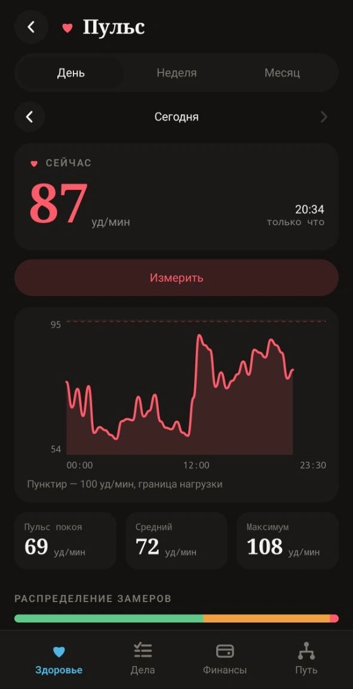
Пульс Текущее показание, график за день, пульс в покое и распределение замеров.
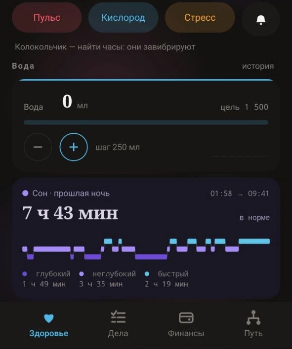
Вода и сон Фрагменты главной вкладки «Здоровье». Здесь можно отметить выпитую воду и посмотреть сводку за прошлую ночь.
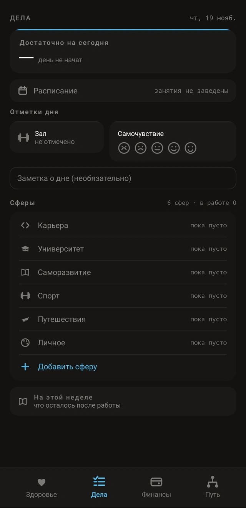
Дела План на день, расписание, отметки о самочувствии и список сфер, в которых можно вести проекты.
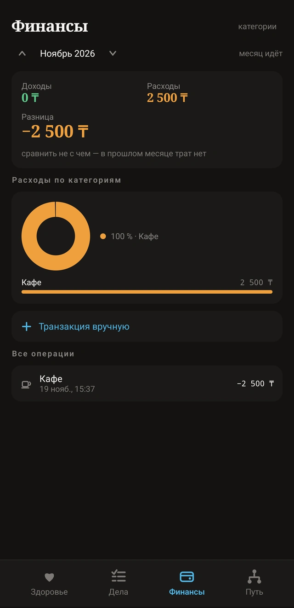
Финансы Доходы и расходы за месяц, категории трат и добавление операций вручную.
Дневник сахара Трёхчасовой график замеров с легендой для отметок сенсора, еды и инсулина.
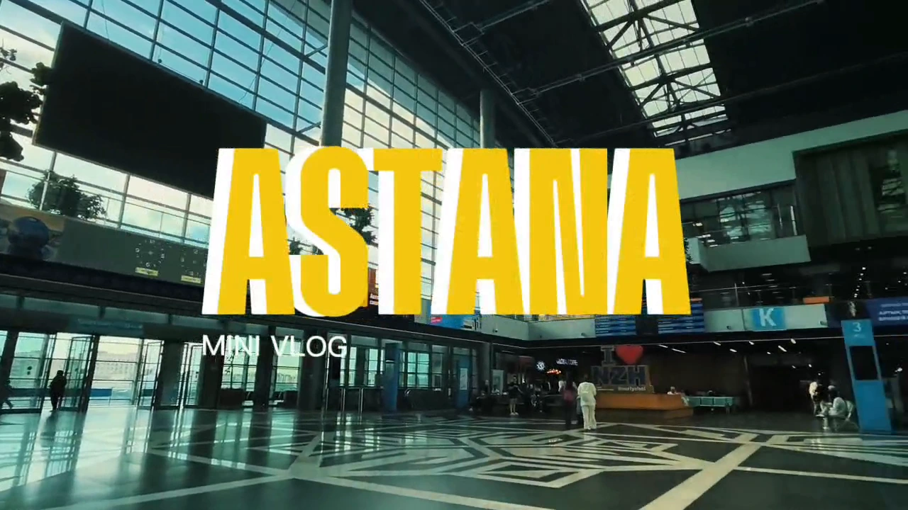
Астана Видео · Съёмка и монтаж ↗
Городская зарисовка о том, как меняется Астана от дневных улиц до вечерних огней.
Автор съёмки и монтажа: Оксана Леонтьева
Открыть видео
Аналитика ДТП Интерфейс · ГИС-платформа ↗
ГИС-платформа для анализа аварийности в Северо-Казахстанской области.
В команде я занималась фронтендом и анализом данных.
Карта и обзорная панель
На карте можно сменить представление и отфильтровать события. Обзорная панель нужна для сравнения периодов. На скриншотах учебные данные.
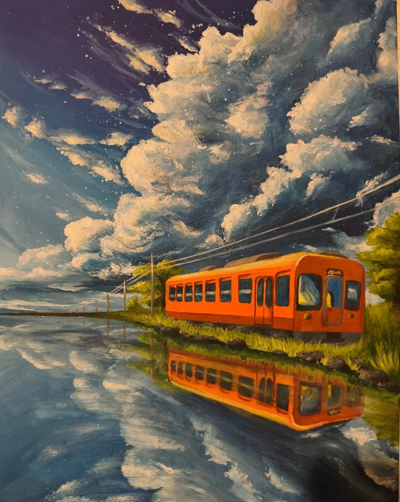
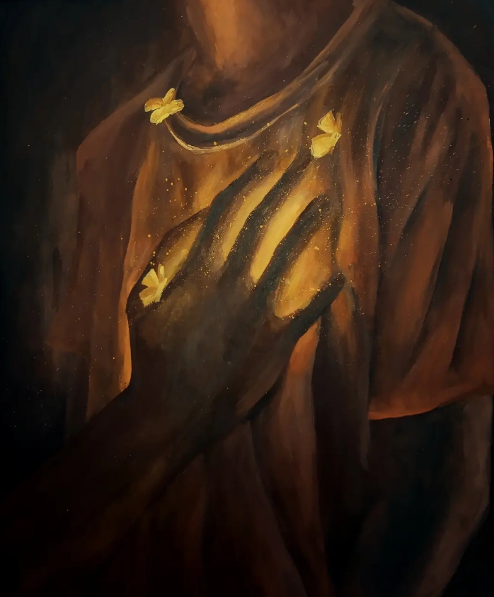
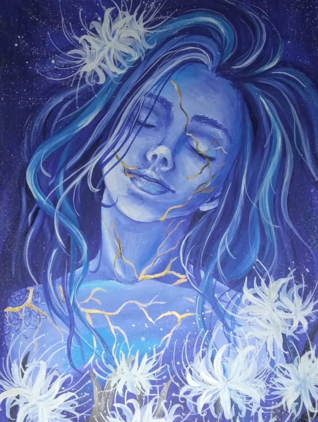
Ручное творчество Живопись · Девять работ ↗
Портреты и фантазийные сюжеты
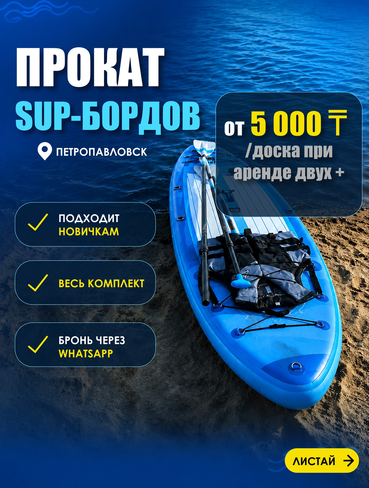
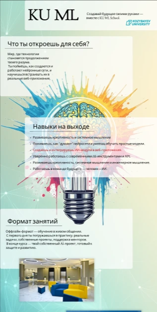
Баннеры Графика · Три серии ↗
Elite Startup Competition
Прокат SUP-бордов
Kozybayev University
Elite Startup Competition
Девять вариантов афиш и баннеров для конкурса стартапов. Мотив вершины повторяется в фотографии, графике и линейной иллюстрации.
Гора и «2026»
Светлая серия с крупными цифрами. Гору можно показать фотографией или оставить только контур.
Горизонтальный формат 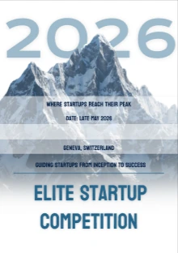
Вертикальный формат Контурная версия
Фотографические варианты
В одном варианте направление задаёт дорога, в другом мягкий розовый слой поверх горного пейзажа.
Геометрические вершины
В иллюстративной версии использованы угловатые формы, холодные оттенки и пиктограммы.
Золотая линия
Тёмная серия с тонким золотым рельефом и декоративной рамкой.
Баннер Вертикальная афиша
Прокат SUP-бордов
Шесть карточек для соцсетей. Глубокий синий объединяет серию, а жёлтый выделяет цены и действия.
Kozybayev University
Два варианта плаката для KU ML School и информационный макет о работе Центра искусственного интеллекта.
KU ML School 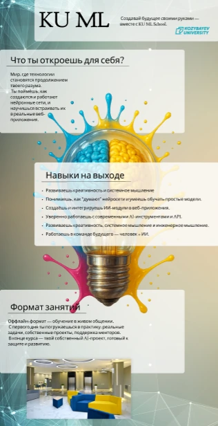
Другой вариант школы Центр искусственного интеллекта
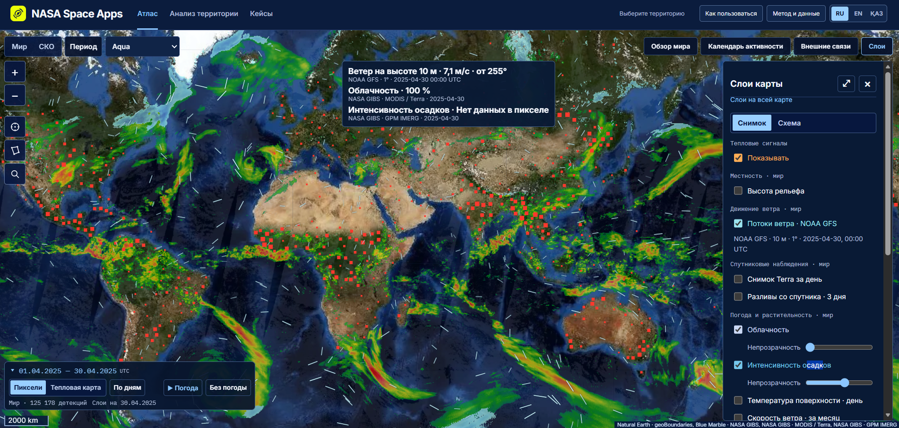
Атлас пожарной активности Интерфейс · NASA Space Apps ↗
Командный проект KU-group для NASA Space Apps.
Мировая карта с погодными слоями
На спутниковом снимке видны тепловые сигналы, облачность, осадки и направление ветра.
Внешние связи в Северо-Казахстанской области
Матрица показывает, как обнаруженная активность связана с температурой, ветром, осадками и другими факторами.
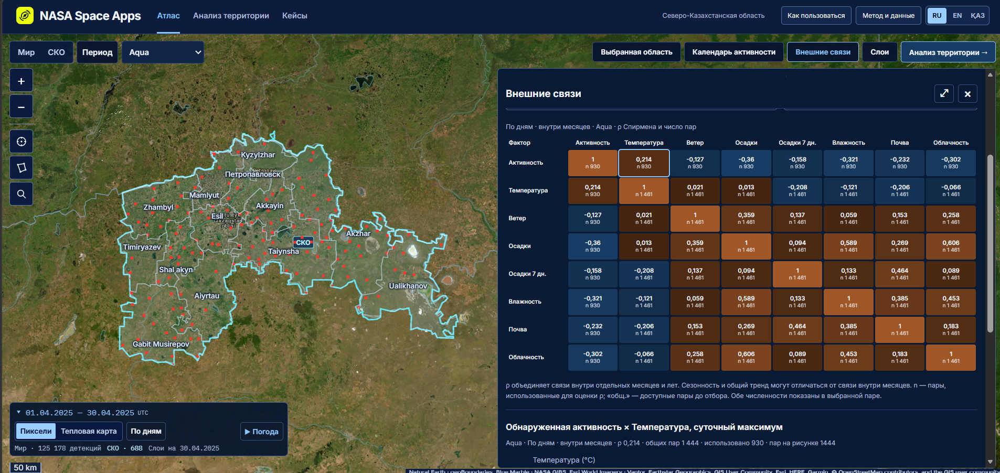